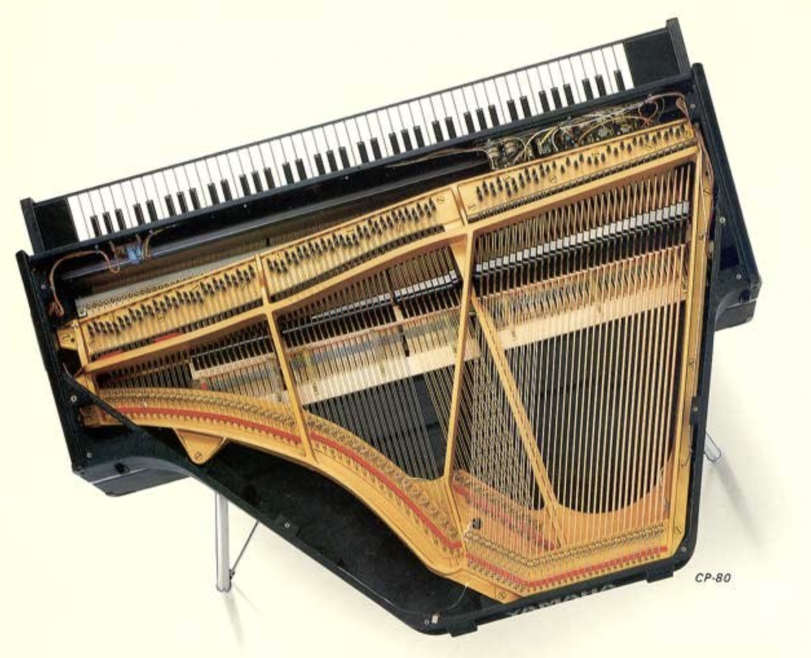

A physical model, not a sample library. Struck strings solved in real time — stiffness, hammer contact and the piezo bridge pickup that gave the CP-80 its bite.
Free and open source under the AGPLv3. Build it yourself from the source — the engine is a single header with no dependencies.
The CP-80's strings are short and under enormous tension, so their partials stretch sharp far faster than a concert grand's. That inharmonicity is the instrument's signature, and it falls out of the physics rather than being dialled in.
A nonlinear felt-and-urethane contact law with rate hardening. Hit it harder and the contact gets shorter and stiffer, so the tone brightens the way a real hammer does — no velocity crossfades.
Output is read as force at the bridge, exactly where the real pickups sit. It is why the model sounds electric rather than acoustic, and why it needs no corrective EQ.
Volume, a three-band tone stack with a centre detent, the three-position brilliance switch, and the tremolo — antiphase across the stereo field, as the original's twin amplifiers were wired.
macOS 11 or later (Apple silicon and Intel) · Windows 10 or later · Linux with ALSA or JACK. Roughly 9% of one core with all 24 voices sounding. Yamaha and CP-80 are trademarks of Yamaha Corporation; this project is not affiliated with or endorsed by Yamaha.